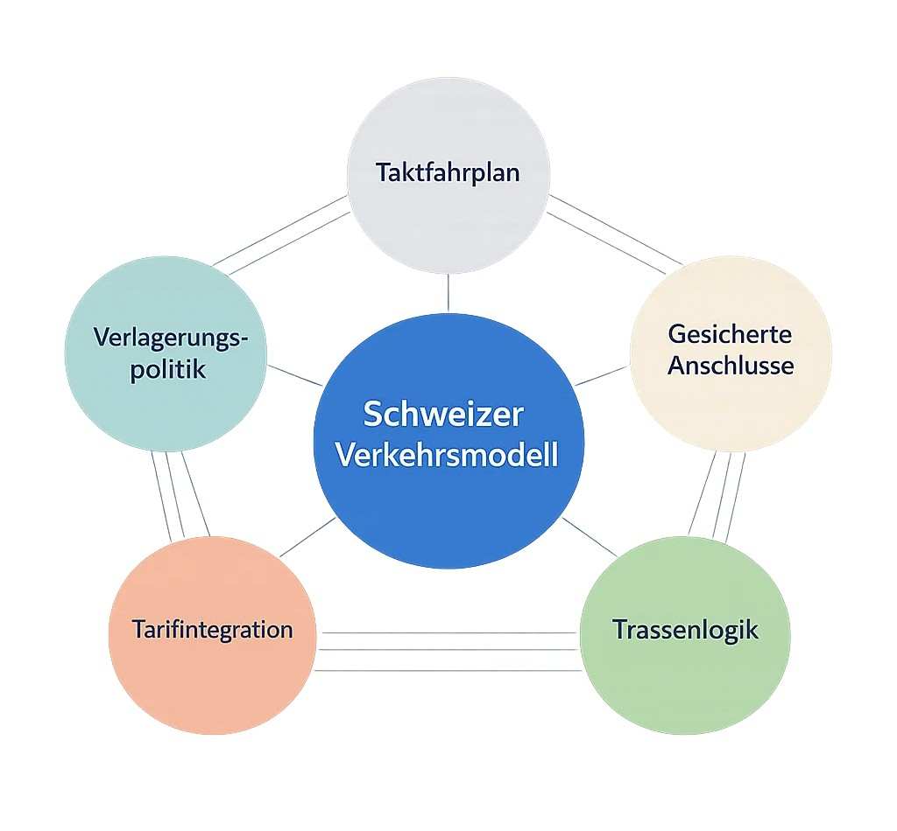
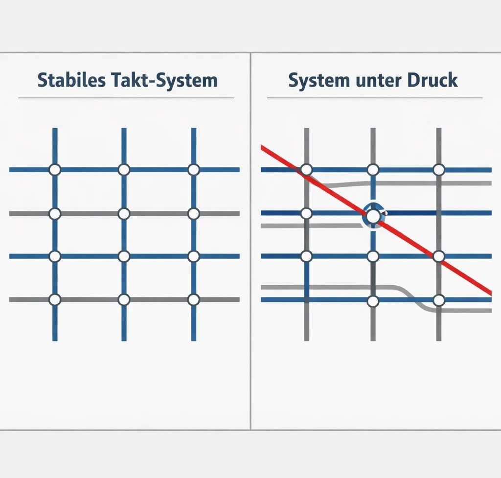
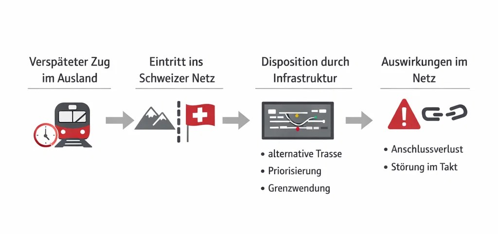
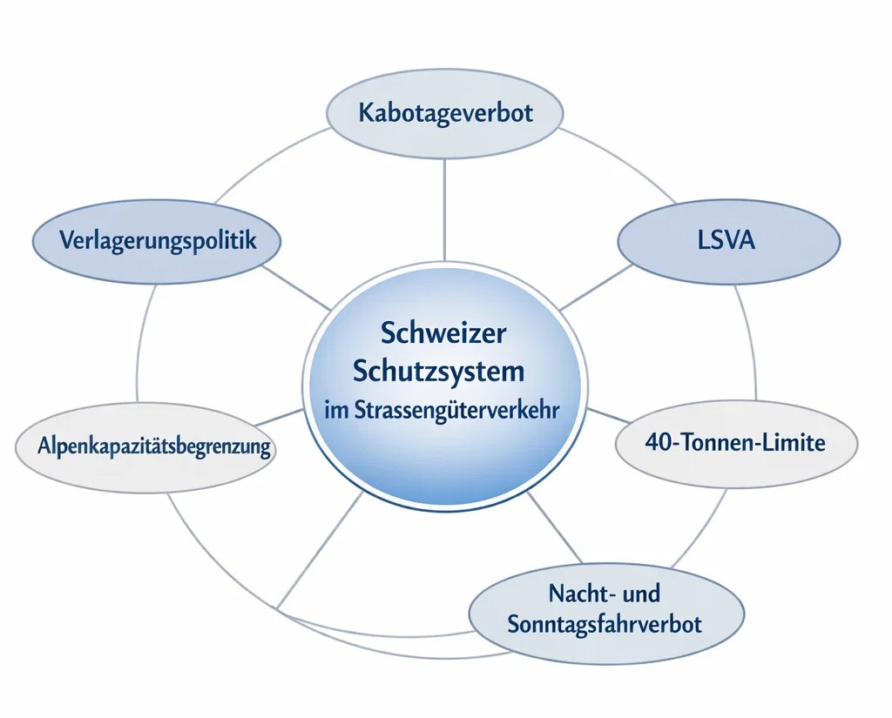
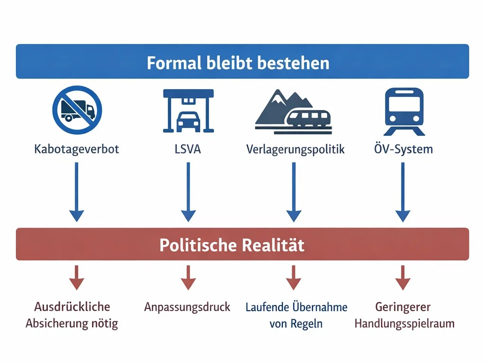

Kurzfassung
Das Landverkehrsabkommen regelt den Zugang zum schweizerischen und europäischen Markt im Strassen- und Schienenverkehr. Der entscheidende Punkt aus Schweizer Sicht liegt weniger in einer offenen Umwälzung des Systems als in der schrittweisen Einbindung in einen Regulierungsrahmen, der nicht auf die Besonderheiten des Schweizer Verkehrsmodells zugeschnitten ist.
Formal bleiben wichtige Schutzmechanismen der Schweiz bestehen – das Kabotageverbot, die leistungsabhängige Schwerverkehrsabgabe und die verkehrspolitischen Schranken im Alpenraum. Politisch heikel ist aber, dass diese Elemente nicht selbstverständlich mitgedacht werden, sondern ausdrücklich abgesichert werden mussten.
Besonders sensibel ist das Abkommen für die Schweiz deshalb, weil der öffentliche Verkehr hier nicht bloss aus einzelnen Linien besteht, sondern aus einem hoch abgestimmten Gesamtsystem, in dem Fahrpläne, Anschlüsse, Trassen, Tarifverbünde und Infrastrukturplanung eng aufeinander aufbauen.
Risiken entstehen vor allem dort, wo ausländische Anbieter oder ausländische Betriebsrealitäten auf dieses fein austarierte Netz treffen – etwa wenn einzelne Trassen im Taktfahrplan besetzt werden, wenn grenzüberschreitende Züge Verspätungen ins Schweizer Netz hineintragen oder wenn auf der Strasse zusätzlicher Wettbewerbsdruck entsteht.
Die eigentliche Gefahr liegt nicht im grossen, sofort sichtbaren Eingriff, sondern in der allmählichen Belastung eines Systems, das nur dann zuverlässig funktioniert, wenn viele Elemente gleichzeitig stabil, planbar und politisch steuerbar bleiben.
Für die Bevölkerung zeigt sich das nicht in abstrakten Vertragsklauseln, sondern im Alltag – etwa wenn Anschlüsse weniger robust werden, wenn sich Störungen schneller durch das Netz fortpflanzen oder wenn der Druck auf das bisher stark koordinierte Service-public-Modell zunimmt.
Worum geht es wirklich?
Das Landverkehrsabkommen regelt nicht nur Verkehr, Güterflüsse oder technische Standards, sondern im Kern die Bedingungen, unter denen die Schweiz ihr eigenes Verkehrsmodell gegenüber einem grösseren, stärker marktorientierten Rahmen behaupten kann.
Die Schweiz betreibt kein loses Nebeneinander von Verbindungen, sondern ein System, in dem der integrale Taktfahrplan, gesicherte Anschlüsse, Tarifintegration und Infrastrukturplanung eng miteinander verzahnt sind. Gerade deshalb reagiert dieses System empfindlich auf punktuelle Eingriffe, selbst wenn diese auf den ersten Blick klein erscheinen.
Ein konkretes Beispiel: Eine einzelne Fernverkehrstrasse ist wirtschaftlich attraktiv, liegt aber fahrplantechnisch genau an einem Knoten. Wenn dieses Angebot instabil ist oder später wieder verschwindet, betrifft das nicht nur diese Verbindung, sondern mehrere Anschlussbeziehungen gleichzeitig.

Zentrale Mechanismen
Marktzugang und regulatorische Bindung
Das Abkommen schafft verbindliche Rahmenbedingungen dafür, wie Anbieter aus der EU und der Schweiz im Landverkehr tätig sein können. Darin liegt eine zentrale Verschiebung: Die Schweiz bewegt sich nicht mehr ausschliesslich innerhalb ihrer eigenen Logik, sondern innerhalb eines Rahmens, der durch europäische Regeln und Marktprinzipien mitgeprägt ist.
Ein Beispiel macht das greifbar: Eine Bahnverbindung kann aus marktwirtschaftlicher Sicht nur dann sinnvoll erscheinen, wenn sie direkt rentabel ist, während sie im Schweizer System auch dann eine wichtige Rolle spielen kann, wenn sie vor allem Anschlüsse sichert oder eine Region stabil an das Netz anbindet.
Trassenzugang und Taktfahrplan
Eine Trasse ist ein fest definiertes Zeitfenster, in dem ein Zug eine Strecke nutzen kann. Im Schweizer System ist sie weit mehr als ein isolierter Slot – sie ist Teil eines übergeordneten Taktgefüges, bei dem sich Züge an bestimmten Knoten systematisch begegnen.
Gerade deshalb kann die Nutzung einzelner Trassen durch gewinnorientierte Anbieter problematisch werden, wenn diese nicht dauerhaft und stabil in dieses System eingebettet sind. Wenn etwa eine attraktive Verbindung zwischen zwei grossen Städten kurzfristig angeboten wird, später aber wieder verschwindet, entsteht nicht nur eine Lücke auf dieser Strecke, sondern eine Störung im gesamten Anschlussgefüge.

Import von Verspätungen
Der grenzüberschreitende Verkehr bringt eine zusätzliche Ebene von Unsicherheit ins System. Verspätete Züge aus dem Ausland treten in ein Netz ein, das stark auf Pünktlichkeit und abgestimmte Übergänge angewiesen ist.
Wenn etwa ein Zug aus Deutschland verspätet in Basel eintrifft, stellt sich nicht nur die Frage, ob dieser Zug weiterfahren kann, sondern auch, ob seine Weiterfahrt andere Verbindungen verzögert oder Anschlüsse gefährdet. In solchen Fällen muss die Infrastruktur aktiv eingreifen – durch Umleitung, Priorisierung oder im Extremfall durch das Wenden eines Zuges an der Grenze.

Strassenverkehr und Schutzmechanismen
Im Strassenverkehr stellt sich die Frage, ob die Schweiz ihre bestehenden Schutzmechanismen langfristig stabil halten kann, obwohl sie sich in einen grösseren Markt integriert.
Ein zentrales Element ist das Kabotageverbot, das verhindert, dass ausländische Transportunternehmen Binnenfahrten innerhalb der Schweiz durchführen. Ein konkretes Beispiel wäre ein ausländischer Lastwagen, der nicht nur Ware in die Schweiz liefert, sondern anschliessend auch Transporte zwischen Zürich und Lausanne übernimmt – was den Wettbewerb im Inland massiv verändern würde.
Ergänzt wird dieses System durch die leistungsabhängige Schwerverkehrsabgabe (LSVA), die 40-Tonnen-Limite und das Nacht- und Sonntagsfahrverbot. Diese Instrumente tragen gemeinsam dazu bei, den Güterverkehr stärker auf die Schiene zu verlagern und die Belastung des Alpenraums zu begrenzen.

Spannungsverhältnis zwischen Marktlogik und Service public
Im Kern zeigt das Abkommen ein strukturelles Spannungsverhältnis zwischen zwei unterschiedlichen Ordnungsprinzipien: einer stark koordinierten, auf Versorgungssicherheit ausgerichteten Logik auf der einen Seite und einer stärker auf Marktöffnung und Wettbewerb ausgerichteten Logik auf der anderen.
Ein Beispiel ist der Fernverkehr: Während zusätzlicher Wettbewerb aus Marktsicht sinnvoll erscheinen kann, weil er Preise senkt oder Innovation fördert, kann derselbe Wettbewerb in einem eng abgestimmten Netz dazu führen, dass profitable Teilstrecken attraktiv werden, während die Verantwortung für die Stabilität des Gesamtsystems weiterhin beim bestehenden System liegt.
Konkrete Auswirkungen
Für die Schweiz als Staat
Die Schweiz kann ihre verkehrspolitischen Instrumente nicht einfach unabhängig weiterentwickeln, sondern muss diese immer wieder in einem grösseren Rahmen einordnen und absichern.
Ein konkretes Beispiel: Zentrale Elemente wie das Kabotageverbot oder die Schwerverkehrsabgabe gelten nicht als selbstverständlicher Bestandteil eines gemeinsamen Systems, sondern als spezifische Ausnahmen, die ausdrücklich festgehalten werden mussten. Das zeigt, dass zwischen der schweizerischen Verkehrspolitik und der europäischen Logik ein realer Unterschied besteht.
Für das System des öffentlichen Verkehrs
Für den öffentlichen Verkehr besteht das Risiko weniger in einem plötzlichen Umbruch als in einer schrittweisen Belastung der Systemlogik. Bereits kleine Veränderungen an sensiblen Punkten können grosse Auswirkungen haben.
Ein Beispiel ist ein zentraler Knotenbahnhof wie Zürich oder Bern, an dem mehrere Linien exakt aufeinander abgestimmt sind: Wenn eine einzelne Verbindung nicht mehr stabil in den Takt passt, können sich daraus Kettenreaktionen ergeben, die mehrere Regionen betreffen.
Für Wirtschaft und Transportsektor
Für den Transportsektor bedeutet das Abkommen eine Veränderung der Wettbewerbsbedingungen, insbesondere im grenzüberschreitenden Verkehr, wo ausländische Anbieter mit anderen Kostenstrukturen auftreten können.
Ein konkretes Beispiel wäre ein Markt, in dem ein ausländischer Anbieter besonders rentable Teilstrecken bedient, während Schweizer Anbieter weiterhin Verpflichtungen im Rahmen des Service public erfüllen müssen. Daraus ergibt sich ein struktureller Anpassungsdruck.
Für die Bevölkerung
Für die Bevölkerung zeigen sich die Auswirkungen vor allem indirekt – in der Zuverlässigkeit des öffentlichen Verkehrs und in der Stabilität von Anschlüssen.
Ein Beispiel: eine Reisekette von einer kleineren Stadt über einen Knotenbahnhof in eine andere Region. Wenn ein Anschluss aufgrund von Störungen oder fahrplantechnischen Verschiebungen nicht mehr zuverlässig erreicht wird, verlängert sich die Reisezeit und die Planbarkeit nimmt ab.

Fazit
Das Landverkehrsabkommen ist kein technisches Randthema. Es betrifft das Kernstück des Schweizer Alltags: ein Verkehrssystem, das dann funktioniert, wenn Fahrpläne, Trassen, Anschlüsse und Finanzierungslogik im Gleichgewicht bleiben.
Die Schweiz hat ihre zentralen Schutzmechanismen – Kabotageverbot, LSVA, Alpenschutzprinzip – formal abgesichert. Die eigentliche Frage ist, ob diese Absicherungen robust genug sind, um das System langfristig stabil zu halten, wenn der Druck von aussen zunimmt.
Wie beim Stromabkommen gilt auch hier: Die Gefahr liegt nicht im sofortigen Eingriff, sondern in der allmählichen Verschiebung des Rahmens, innerhalb dessen die Schweiz ihre eigene Verkehrspolitik noch selbst gestalten kann.
Zusammenfassungen
Detailanalyse
Quellen und Vertiefung
- Landverkehrsabkommen Schweiz–EU – Bundesamt für Verkehr BAV
www.bav.admin.ch - Erläuternder Bericht zum Paket Schweiz–EU – EDA/Bundesrat, 13. Juni 2025
eda.admin.ch – Erläuternder Bericht - Faktenblatt Landverkehrsabkommen – Der Bundesrat, 13. Juni 2025
eda.admin.ch – Paket CH–EU - Übersicht EU-Gesetzgebungsakte Paket CH–EU – EDA, 13. Juni 2025
eda.admin.ch – Paket CH–EU